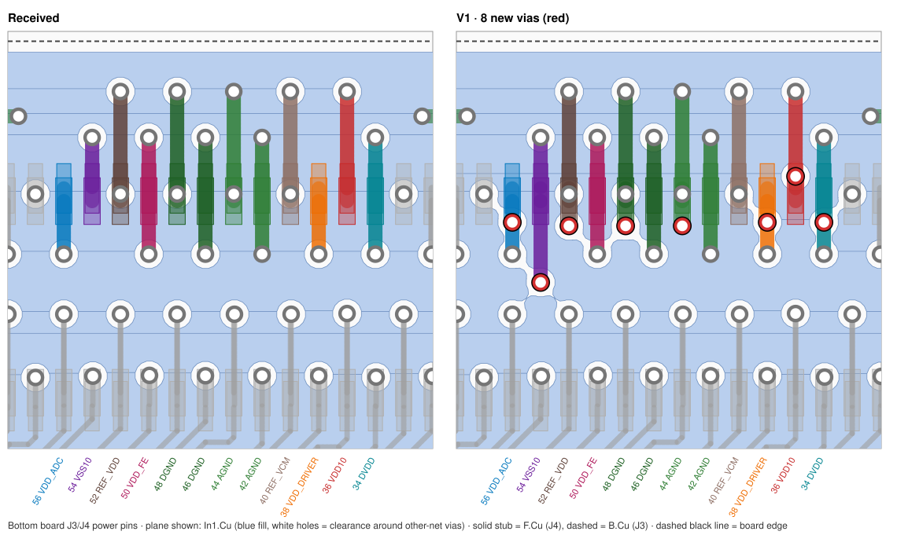
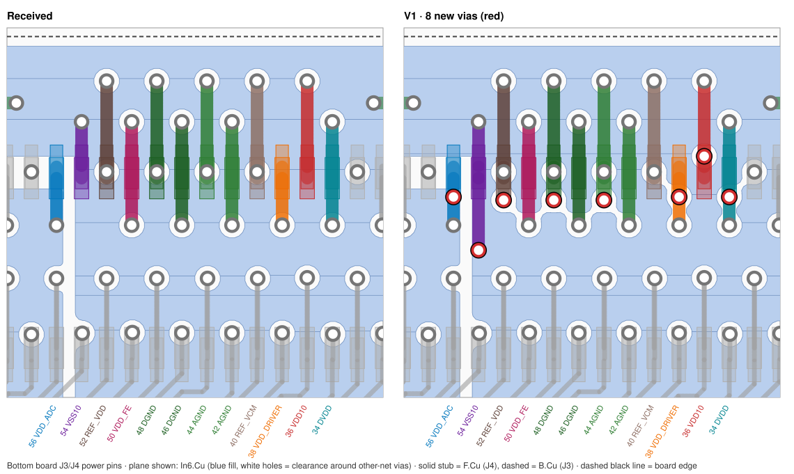
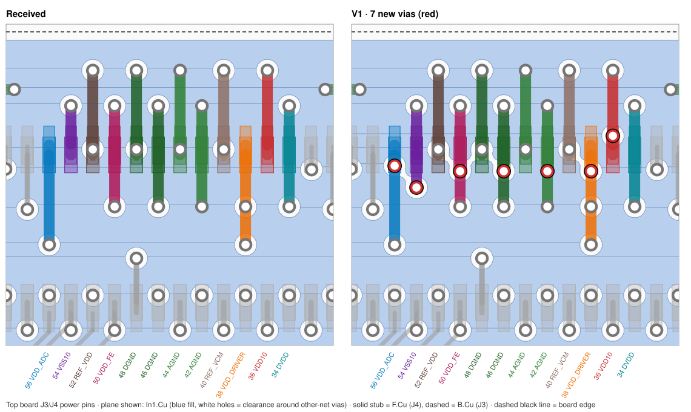
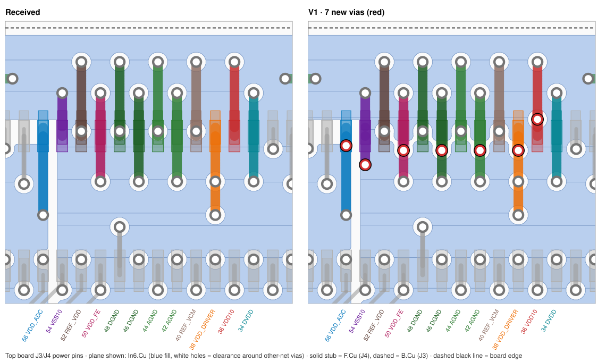

ASIC board pair: review and connector power vias
Top and bottom ASIC boards as received 11 Nov 2026, 15:40 CST (top board saved 15:50) · power-via V1 · edited 11 Nov 2026, 16:00 CST
Do not order the pair yet: 2 blockers. The two boards wire correctly to each other: all 80 pins mate pin to pin, and each chip output has its own line. But the pass-through pins were renamed into a new order, and the FPGA-LDO boards (Option A V12 and the Option B router V2) still use the old one. Only 4 of the 28 top-board lines per port land on the right signal, so ASIC3/4/7/8 cannot be configured or read. The via set also still cannot be laminated, as in ASIC-02 this morning.
Bottom board V1 KiCad ↓Top board V1 KiCad ↓
Connector power pins: more vias (V1)
The power and ground pins of J3/J4 used one or two vias each. V1 adds vias of the board's own size (0.25 mm pad, 0.15 mm hole, top to bottom). Every rail and ground pin now has at least 2, and several have 3. Each new via joins the J3 pad (bottom side), the J4 pad (top side) and its own plane. Nothing else was moved or removed.
- Checks: KiCad check with refill and schematic parity is the same as on the received files: 0 unconnected, parity 0, and only the old J4/J1 courtyard error. Every plane is still one piece.
- Trade-off: there is no room above the connector, because the board edge is 0.7 mm away. So each new via sits about 0.55 mm from the nearest via of another net, closer than the 0.70 mm the rework used. Around these vias the planes lose a small web (about 0.6–1.2 mm² per plane), seen as short merged white holes in the pictures.
- Does it matter electrically? The power reviewer found the single vias cost only microvolts and under 1 nH. The real limit on signal return is the 4 ground contacts in the connector, not the vias.
| Pin | Net | Bottom: received → V1 | Top: received → V1 |
|---|---|---|---|
| 34 | DVDD | 2 → 3 | 2 |
| 36 | VDD10 | 1 → 2 | 1 → 2 |
| 38 | VDD_DRIVER | 1 → 2 | 2 → 3 |
| 40 | REF_VCM | 2 | 2 |
| 42 | AGND | 2 | 2 → 3 |
| 44 | AGND | 2 → 3 | 2 |
| 46 | DGND | 2 | 2 → 3 |
| 48 | DGND | 2 → 3 | 2 |
| 50 | VDD_FE | 2 | 2 → 3 |
| 52 | REF_VDD | 2 → 3 | 2 |
| 54 | VSS10 | 1 → 2 | 1 → 2 |
| 56 | VDD_ADC | 1 → 2 | 1 → 2 |
| 1 | VDD_CGEN | 1 at the pad plus 2 joining its top and bottom pours (unchanged) | |




Review findings
BlockerP-B1 · The top board's pin order does not match the FPGA-LDO pin map, so ASIC3/4/7/8 cannot be configured and 6 of their outputs per port reach no FPGA pin.
The pair is consistent with itself: the bottom board was renamed to the top board's order, and the top board's chips drive the even-row T_ pins. FPGA-LDO A V12 and the Option B router V2 still use the even-row order of the original PCB-5 (pin map V5). On each 80-pin port only 4 of the 28 top-board lines land on the expected FPGA-LDO net. 12 outputs reach the wrong FPGA input, 6 outputs land on pins the FPGA-LDO board leaves open, and the top chips' SPI data, clock and latch inputs land on lines the FPGA treats as inputs, so nothing drives them.
Action: Choose one pin map. The smaller change is to re-map the even row of FPGA-LDO J3/J4 (before any LDO order) to the pair's order, with 6 FPGA outputs per port added for T_SPI_DINR/L, T_SPI_DINR/L(2), T_SPI_CLK and T_SPI_LATCH. Update the Frontend J1/J2 map and XDC to match, keeping CLK32MHZ on clock-capable balls.
Evidence, source and consequence
- Where
- FPGA-LDO A J3/J4 and router J3/J4 even pins 2-32 and 58-80, against ASIC J3/J4 on both received boards (identical on both ports). Correct: 74, 76, 78, 80 (DATA4..1 of ASIC7/ASIC3). Wrong signal: 10, 12, 14, 20, 22, 26, 28, 30, 32, 60, 62, 64. Output lost on an open FPGA-LDO pin: 2 (READ), 4, 6, 8 (D8, D7, D6 of the U01_BCD2 chip), 24 (D2), 58 (D6 of the U01_BCD1 chip). Chip input left undriven: 16/18 and 66/68 (SPI_DINR/SPI_DINL), 70 (SPI_LATCH of both top chips), 72 (SPI_CLK of both top chips).
- Evidence
- Top_board pads and schematic netlist: J3/J4.12 = T_CLK32MHZ(2) = U01_BCD2.CLK32MHZ, but FPGA-LDO J3.12 = ASIC8_DATA8 and J4.12 = ASIC4_DATA8. Pin 10 = T_D<5>(2) (DATAR<4>) against ASIC8_READ / ASIC4_READ. Pin 70 = T_SPI_LATCH and pin 72 = T_SPI_CLK (both top chips) against ASIC7_CLK32MHz_Out / ASIC7_SYNC on J3 and ASIC3_CLK32MHz_Out / ASIC3_SYNC on J4. Pins 2/4/6/8/24/58 are 'unconnected-(J3-PadN)' in exports/ldo_a/connectors.csv and exports/ldo_b_router/connectors.csv. Full table: scratch/pair-stacking/stack_table.csv, per port 4 ok, 12 wrong signal, 6 lost, 6 undriven. The FPGA-LDO map equals the 'Before' column of Bottom_board/CHANGES.md, the original PCB-5 order. The returned clocks also lose their clock-capable balls: the top chips' CLK32MHZ lands on ASIC8_DATA8 (U1 U16, L17N), ASIC7_DATA8 (L4, L5P), ASIC4_DATA8 (B17, L16N) and ASIC3_DATA8 (R7, L22P) instead of SRCC/MRCC pins P15, N3, E16, P4 (exports/frontend/pads.csv).
- Judged against
- FPGA-LDO A V12 and router V2 J3/J4 pin assignment (exports/ldo_a, exports/ldo_b_router); inputs/asic/Pins__Sheet1.csv lists SPI_DL/SPI_DR as separate per-chip inputs.
- Consequence
- Firmware cannot repair this. Six data/READ lines per port go nowhere. The top chips' SPI_CLK and SPI_LATCH float, so they are never configured and may latch noise into their registers. Half of the eight ASICs cannot run.
- Basis
- confirmed_in_files
- Also from power and decoupling
- The re-ordered pass-through pins no longer match FPGA-LDO A or the Option B router, so the top board's chips lose their data, clock and SPI connections.
Received J3 nets (both boards, matching CHANGES.md table): pin 2 T_READ(2), 4 T_D<8>(2), 6 T_D<7>(2), 8 T_D<6>(2), 10 T_D<5>(2), 12 T_CLK32MHZ(2), 16 T_SPI_DINR(2), 24 T_D<2>(2), 58 T_D<6>, 62 T_CLK32MHZ, 70 T_SPI_LATCH, 72 T_SPI_CLK. review_2026-11-11/exports/ldo_b_router/pads.csv and exports/ldo_a/pads.csv J3: 2, 4, 6, 8, 24, 58 unconnected; 10 /ASIC8_READ, 12 /ASIC8_DATA8, 62 /ASIC7_DATA8, 70 /ASIC7_CLK32MHz_Out, 72 /ASIC7_SYNC (J4 the same with ASIC4/ASIC3). inputs/asic/J3_pinout__J3_Pinout.csv: pin 10 T_READ(2), 70 T_CLK32MHZ, 72 T_SYNC (the old order). Pins 74-80 are unchanged.
BlockerP-B2 · Both boards keep 28 crossing via-span pairs, so a normal sequential lamination still cannot build them; the new under-die capacitor vias re-create every crossing.
Each board still uses 17 different via spans with one 0.15 mm drill / 0.25 mm pad. Sequential lamination presses the board in stages and drills between presses. It can only make spans that nest or do not overlap. Here every top-down span 1-3 to 1-9 (L1 = F.Cu ... L10 = B.Cu) crosses a bottom-up span 2-10 to 8-10, giving 28 crossing pairs, the same count as the original. The rework removed the old bottom-up vias at the connector, but added 38 new bottom-up vias for the under-die capacitors. Those re-create spans 2-10 to 9-10.
Action: Make the 38 new bottom-up capacitor vias through vias, or move those capacitors onto spans that start at L1. That removes all 28 crossings. Then get the fabricator's written list of acceptable spans for the remaining 1-k set.
Evidence, source and consequence
- Where
- Both boards. Top-down blind spans (die fan-out, connector strip): 1-3 VDD_FE x4, 1-4 REF_VDD x4, 1-5 REF_VCM x6, 1-6 x7, 1-7 x7, 1-8 DVDD x5, 1-9 DGND x15, mostly y 75-84. New bottom-up spans under the dies at x 129.55-133.45 and 137.25-141.00, y 79.05-84.20: 2-10 AGND x12, 3-10 VDD_FE, 4-10 REF_VDD, 5-10 REF_VCM, 6-10 VDD_DRIVER, 7-10 VDD_ADC, 8-10 DVDD (x4 each), 9-10 DGND x2. One VSS10 via at (134.87, 76.51) runs F.Cu-In6 but is typed 'buried' in the file.
- Evidence
- pcbnew dump of received/*/PCB.kicad_pcb, all vias 0.25/0.15 mm. Bottom: 1-2 x121, 1-3 x4, 1-4 x4, 1-5 x6, 1-6 x7, 1-7 x7, 1-8 x5, 1-9 x15, 1-10 x255, 2-10 x12, 3-10..8-10 x4 each, 9-10 x2 = 462 vias, 207 non-through. Top: the same with 1-10 x256 (463 vias). Original: 501 vias, 272 non-through, same 17 spans. Crossing pairs (a<c<b<d), counted by script: 28 on all three files. Compared with the original, the 92 (bottom) and 168 (top) new vias include all 42 bottom-up vias; every original bottom-up via was removed. Stack in file: copper 0.035, cores 0.1825, prepregs 0.1 mm. Depth of 2-10 = 1.45 mm, ratio 9.6:1 for a 0.15 mm hole.
- Judged against
- JLCPCB PCB capabilities page, https://jlcpcb.com/capabilities/pcb-capabilities and JLCPCB HDI PCB capabilities FAQ, https://jlcpcb.com/help/article/hdi-pcb-capabilities-faq (both read 11 Nov 2026): laser blind vias only through one 0.05-0.127 mm dielectric at a ratio of at most 1:1; mechanical buried vias need a core of at least 0.30 mm; skip vias are split into stacked blind and buried vias. PCBWay capabilities page, Advanced PCB table, https://www.pcbway.com/capabilities.html and PCBWay HDI page, https://www.pcbway.com/hdi-pcb.html (both read 11 Nov 2026): HDI 1+N+1 normal, any-layer HDI medium; laser vias need dielectric of at most 0.15 mm. The rule that crossing spans need controlled-depth drilling is engineering judgement.
- Consequence
- A fabricator will either refuse the job or quote a non-standard any-layer build, which this stack (0.1825 mm cores) does not allow anyway. Boards cannot be ordered as drawn.
- Basis
- calculated
- Also from power and decoupling
- All 38 bottom-side blind vias are the new decoupling vias, and they still make 28 crossing via spans that a normal lamination cannot build.
conn_dump.py via tally (scratch/pair-power/conn_*.txt), identical on both boards. Capacitor trace (scratch/pair-power/caps_*.txt): every one of the 24 B.Cu capacitors has one blind via per pad, spans In1..In8 to B.Cu. Crossing pairs: F-In(k) against In(j)-B with j < k, k and j each 1-8 present: 28. Depth In1 to B.Cu 1.41 mm / 0.15 mm = 9.4:1.
MajorP-M1 · Each DISC_OUT pin is driven by one chip on each board, so two chip outputs are tied together on pins 3 and 5.
DISC_OUT is a per-chip output in the ASIC designer's sheet. On both boards U01_BCD2.DISC_OUT goes to pin 3 and U01_BCD1.DISC_OUT to pin 5, and both boards pass these pins through. In a stack each pin therefore carries the outputs of two chips. The FPGA-LDO boards leave pins 3 and 5 open, so nothing reads them. If the outputs are push-pull and differ, the two drivers fight (output contention).
Action: Ask the ASIC designer whether DISC_OUT is a push-pull output. If it is, break the DISC_OUT track to J3/J4 on the top board (leave a test pad at the chip) or fit a series resistor on one board.
Evidence, source and consequence
- Where
- Bottom and top board J3/J4 pins 3 (DISC_OUT(2), U01_BCD2) and 5 (DISC_OUT, U01_BCD1). Per FPGA-LDO port: ASIC6+ASIC8 on 3 and ASIC5+ASIC7 on 5 (J3); ASIC2+ASIC4 and ASIC1+ASIC3 (J4).
- Evidence
- pads_Top_board.csv and pads_Bottom_board.csv: /DISC_OUT = J3.5, J4.5, U01_BCD1.DISC_OUT on both boards (top track 24.78 mm, bottom 24.37 mm); /DISC_OUT(2) = J3.3, J4.3, U01_BCD2.DISC_OUT (10.13 / 10.16 mm). exports/ldo_a and ldo_b_router: J3/J4.3 and .5 unconnected. inputs/asic/Pins__Sheet1.csv rows 1-2 place DISC_OUT with the chip outputs, with termination undecided (ASIC_REFERENCE.md line 43). No spare connector pin remains: the even row is fully used by T_ lines and rails.
- Judged against
- inputs/asic/Pins__Sheet1.csv; ASIC_REFERENCE.md line 43; engineering judgement.
- Consequence
- If DISC_OUT is ever enabled on two stacked chips, it causes extra supply current and stress on bonded dies, and the signal cannot be used for testing.
- Basis
- needs_vendor_answer
MajorP-M2 · The top chips now need 6 extra FPGA outputs per port (12 in all), which the FPGA-LDO and Frontend boards do not have.
The pair gives each top chip its own SPI_DINR and SPI_DINL and gives the top board its own SPI_CLK and SPI_LATCH (T_ lines). This fixes the shared-stream problem on the ASIC boards. The Frontend still brings out only four SPI data pairs (STIM_CHIP1..4), one SPI clock per port and one latch, so the top chips have no source. The fix in finding 1 needs 12 more FPGA-to-ASIC lines across the Frontend-to-LDO joint and new Frontend FPGA pins.
Action: Decide now: add the 12 lines through the Frontend and the FPGA-LDO boards, or tie the top board's SPI inputs to the bottom board's lines, accepting identical configuration. Record the choice in pin map V5's successor before any FPGA-LDO or Frontend order.
Evidence, source and consequence
- Where
- ASIC J3/J4 pins 16, 18, 66, 68 (T_SPI_DINR/L(2), T_SPI_DINR/L), 70 (T_SPI_LATCH), 72 (T_SPI_CLK); FPGA-LDO J1/J2; Frontend U1 and its XDC.
- Evidence
- Top_board: /T_SPI_CLK and /T_SPI_LATCH each = J3, J4, U01_BCD1, U01_BCD2 (20.15 mm / 22.45 mm); /T_SPI_DINR = U01_BCD1.SPI_DINR on pin 66, and so on. Bottom_board: /SPI_CLK (63) and /SPI_LATCH (61) reach only its own two chips. exports/frontend/pads.csv: only STIM_CHIP1..4_SPI_DL/DR, BOARD1/3_SPI_CLK and SPI_LATCH_SHARED. The system review (SYS-04) counted 15 spare contacts at the Frontend-LDO joint, enough for 12, with little margin.
- Judged against
- inputs/asic/Pins__Sheet1.csv ('Not Shared / Chip in' SPI_DL, SPI_DR); ASIC_REFERENCE.md lines 57-64 (per-chip configuration stream).
- Consequence
- Unless the boards above the pair change, ASIC3/4/7/8 cannot be configured, even after the lanes are re-mapped.
- Basis
- needs_decision
MajorP-M3 · Twenty-four new bottom-side 0201 capacitors sit directly over the lower board's bonded dies inside the 1.5 mm DF40 gap.
The rework moved the 1.5 V decoupling capacitors to the bottom side, under each die. In the pair, the top board's bottom side faces the bottom board's wire-bonded dies across the DF40 mated gap. The earlier fit note assumed only bare PCB lay over the dies. Each 0201 plus solder takes roughly 0.3 mm of that gap. On the bottom board the same capacitors face the FPGA-LDO board below. Parts on the back of a bond area also stop the board lying flat on the bonder's heated stage.
Action: Get die thickness, loop height and encapsulation height from the ASIC designer or bonding house and check the gap with the real capacitor height. Ask the bonding house whether back-side parts under the bond area are acceptable. If either fails, move the capacitors outside the die footprints.
Evidence, source and consequence
- Where
- Both boards, B.Cu: C1, C2, C4, C5, C7, C41, C51, C53, C55, C57, C59, C61 at x 129.55-133.45 under U01_BCD1 (centre 130.37, 80.20); C14, C33, C34, C42, C46, C48, C52, C54, C56, C58, C60, C62 at x 137.25-141.00 under U01_BCD2 (centre 140.75, 80.20); all at y 79.05-84.20. Bond-finger window of each die: x 125.82-134.41 and 136.21-144.79, top row y 75.36.
- Evidence
- Footprint dump: 24 Capacitor_SMD:C_0201_0603Metric on B.Cu at the coordinates above, identical on both boards. Fit record cited by ASIC-33: 1.5 mm nominal DF40 mated gap, die thickness, loop height and glob-top height not recorded anywhere. 0201 body height about 0.3 mm is a typical value, not checked against a datasheet: the parts have no part number. That leaves about 1.2 mm, before tolerance, for die, bond loops and any encapsulation.
- Judged against
- Engineering judgement; ASIC-33 and ASIC-11 records; DF40 gap from the system fit record (inputs/system/README_2026-11-11.md).
- Consequence
- The capacitors could touch or crush the lower board's bond wires or glob top when the pair is mated, and the bonding house may need a pocketed fixture or refuse to bond with back-side parts.
- Basis
- needs_measurement
- Also from power and decoupling
- The top board's 24 bottom-side capacitors hang directly over the bottom board's dies and bond wires in the 1.5 mm stack gap.
scratch/pair-power/dies.py on both received boards; J3 at (135.54, 71.01) and J4 at (135.54, 71.005) on both, so the boards align. DF40 series catalogue, 1.5 mm stacking height for DF40C header and receptacle (hirose.com, en_DF40_CAT). 0201 height from general practice (0.3 +/- 0.03 mm), not from a chosen part.
MajorP-M4 · Both boards are still a 1.6 mm, ten-layer stack, not the 0.8 mm the system fit assumes.
The board files still define a 1.6 mm board with 0.1825 mm cores and 0.1 mm prepregs. The stack-fit models and the project record use 0.8 mm. Neither CHANGES.md mentions thickness. At 0.8 mm, ten layers of 1 oz copper (0.35 mm) leave about 0.45 mm for nine dielectrics, about 0.05 mm each. That is at or below what the fabricators list, and it rules out the 0.30 mm buried-via cores JLCPCB asks for.
Action: Decide 0.8 or 1.6 mm with the fabricator's real ten-layer stack in hand, write it into both board files, and re-run the fit check.
Evidence, source and consequence
- Where
- Both boards, PCB.kicad_pcb line 6 (thickness 1.6) and the stack-up block lines 44-167.
- Evidence
- Stack sum: 10 x 0.035 + 5 x 0.1 + 4 x 0.1825 + 2 x 0.01 mask = 1.60 mm. Through-via ratio 1.6 / 0.15 = 10.7. ASIC-08 record: 0.8 mm chosen on 6 November and drawn at 0.8 mm in the fit models.
- Judged against
- JLCPCB PCB capabilities page, https://jlcpcb.com/capabilities/pcb-capabilities and JLCPCB HDI PCB capabilities FAQ, https://jlcpcb.com/help/article/hdi-pcb-capabilities-faq (both read 11 Nov 2026): HDI finished thickness 0.5-2.4 mm; buried-via core at least 0.30 mm; laser dielectric 0.05-0.127 mm. PCBWay capabilities page, Advanced PCB table, https://www.pcbway.com/capabilities.html and PCBWay HDI page, https://www.pcbway.com/hdi-pcb.html (both read 11 Nov 2026): 10 layers below 1.20 mm is high difficulty; minimum prepreg for laser vias 0.06 mm.
- Consequence
- Ordering these files gives 1.6 mm boards. The stack is then about 1.6 mm taller per pair than the fit study and does not match the enclosure and head models. Switching to 0.8 mm later changes every via and impedance assumption.
- Basis
- needs_decision
MajorP-M5 · Open through-via holes now sit in 71 (bottom) and 83 (top) DF40 pads, and nothing specifies filling or capping.
Most J3/J4 pins pass through the board in a via drilled inside the pad. An open hole in a pad draws molten solder down the barrel and can starve a fine-pitch joint. Because J3 and J4 sit at the same XY, one open hole serves the J4 joint on top and the J3 joint below. On the top board, 37 J3 holes straddle the pad end, half inside the pad and half under mask. The board setup and all 89 vias with their own settings say 'filling no, capping no'. The bottom-side 0201 capacitors no longer have vias in their pads.
Action: Order via-in-pad copper or resin fill with plating over (cap) for these vias once the fabricator confirms a 0.15 mm hole, and set filling and capping in the board setup. Or move the top J3 vias at y 72.23 and 72.87 fully inside or fully outside the pads.
Evidence, source and consequence
- Where
- Bottom: J4 38 holes fully in pad (y 69.55 and about 72.14); J3 18 fully in pad (y 69.55) plus 15 partly (original odd row, y about 72.14). Top: J4 29 fully in pad plus 9 with the hole running past the pad edge (y 69.89-69.93); J3 4 fully, 37 straddling the pad end (19 at y 72.23, 18 at y 72.87; J3 odd pads span y 72.20-72.90), 4 partly. 0201: C6 (145.53, 70.92) and C50 (145.55, 71.79) on F.Cu, 4 vias, unchanged.
- Evidence
- Script over pads and via holes (24 points round each hole edge) on received/*/PCB.kicad_pcb: all DF40 in-pad vias are through vias (L1-L10, 0.15 mm drill). Board setup lines 174-187: tenting yes, covering no, plugging no, capping no, filling no; 89 vias carry the same flags explicitly. CHANGES.md (bottom) says via-in-pad is 'used the same way as in your original'; neither CHANGES.md mentions filling. Original: J4 30 through + 12 blind, J3 25 through + 17 blind, 33 capacitor vias in pads.
- Judged against
- JLCPCB PCB capabilities page, https://jlcpcb.com/capabilities/pcb-capabilities and JLCPCB HDI PCB capabilities FAQ, https://jlcpcb.com/help/article/hdi-pcb-capabilities-faq (both read 11 Nov 2026): epoxy or copper-paste filled and capped vias for 0.15-0.55 mm, default on 6+ layers (so JLC may fill these by default; PCBWay treats it as an order option). PCBWay capabilities page, Advanced PCB table, https://www.pcbway.com/capabilities.html and PCBWay HDI page, https://www.pcbway.com/hdi-pcb.html (both read 11 Nov 2026) (resin fill listed from 0.254 mm). The solder-wicking risk is engineering judgement.
- Consequence
- Open or partly-wetted DF40 joints on 0.4 mm pitch. That gives intermittent rails or signals across up to four ASICs, and a half-covered hole at the pad end on the top J3 adds uneven mask over the barrel.
- Basis
- confirmed_in_files
MajorP-M6 · Tracks, via rings, via holes to plane copper, and planes at the board edge are all below JLCPCB's and PCBWay's published limits, and the ring check is still turned off.
Four geometry values sit below what both fabricators publish as standard. Tracks and gaps are 3 mil (0.0762 mm). Every via has a 0.05 mm copper ring around its hole. Every inner plane comes within 0.127 mm of the hole of a different-net via. All eight inner planes reach 0.10 mm from the routed edge. KiCad passes the board only because its own rules match these values and the annular-ring check is set to ignore. Several holes are also closer than the hole-to-hole spacing the fabricators publish.
Action: Set annular_width back to error. Send the fabricator this table (3/3 mil, 0.05 mm ring, 0.127 mm hole to plane, 0.10 mm plane to edge, hole pairs) for a written yes. Pull the plane outlines back to at least 0.25 mm from the edge.
Evidence, source and consequence
- Where
- Both boards, whole area. Tracks: F.Cu 799/763, B.Cu 356/173 segments (bottom/top), plus 130 on In4 on the top board. All 462/463 vias. Inner planes In1-In8 at x 124.441 and 146.205, y 67.542 and 84.37. Different-net blind pairs added under the dies: DVDD 8-10 (141.00, 80.40) vs AGND 1-2 (141.06, 80.61), 0.068 mm edge to edge; VDD_FE 3-10 (137.25, 83.80) vs AGND 1-2 (137.13, 84.02), 0.101 mm; DVDD 8-10 (129.55, 80.05) vs AGND 1-2 (129.57, 80.31), 0.111 mm.
- Evidence
- PCB.kicad_pro (unchanged from the original): min_track_width 0.0762, min_clearance 0.0762, min_via_annular_width 0.07493 with annular_width = ignore, min_copper_edge_clearance 0.1016, min_hole_to_hole 0.1016. Scratch DRC (kicad-cli 10.0.6, refill, rules track 0.09 / ring 0.075 / hole-to-hole 0.2 / hole clearance 0.2 / edge 0.2) reports annular 0.0500 mm, track 0.0762, clearance down to 0.0757, hole-to-hole down to 0.119, edge down to 0.1016 (32 through vias near the edge), each type capped at 199 reports. Own geometry check on the refilled planes: 2,307 (bottom) / 2,300 (top) via-layer cases with 0.127 mm from hole edge to other-net plane copper (0.075 hole radius + 0.05 ring + 0.0762 gap = 0.126). Hole edge-to-edge under 0.2 mm: 32 bottom / 34 top pairs, 24/26 different-net, 12/14 through-through. Inner plane fills reach x 124.441 against an edge at about 124.34.
- Judged against
- JLCPCB PCB capabilities page, https://jlcpcb.com/capabilities/pcb-capabilities and JLCPCB HDI PCB capabilities FAQ, https://jlcpcb.com/help/article/hdi-pcb-capabilities-faq (both read 11 Nov 2026): multilayer track/space 0.09/0.09 mm (3 mil only in BGA fan-out, HDI 3/3 mil); inner via hole to copper 0.2 mm; via hole-to-hole 0.2 mm; copper to routed edge 0.2 mm; HDI blind/buried ring at least 0.075 mm and pad at least hole + 0.15 mm; blind via to hole, different nets, at least 0.24 mm. PCBWay capabilities page, Advanced PCB table, https://www.pcbway.com/capabilities.html and PCBWay HDI page, https://www.pcbway.com/hdi-pcb.html (both read 11 Nov 2026): outer 1 oz below 4/4 mil is high difficulty; via ring below 3 mil is high; inner hole-to-copper for 10+ layers is 10 mil normal, 7-8 mil high; via hole-to-hole 11 mil normal; copper to edge 0.25 mm normal, below 0.20 mm high.
- Consequence
- Expect an HDI or high-difficulty quote, an engineering query that changes the design, or yield loss. Exposed plane copper at a routed edge risks a short between plane nets, including the +10 V and -10 V planes, on any board that is cut slightly off.
- Basis
- calculated
MajorP-M7 · Bond pads still carry solder paste, the finish is still 'None', each finger still has its own zero-margin mask opening, and no die-attach area exists.
The ASIC footprints are unchanged by the rework. All 176 pads per die are on F.Cu, F.Mask and F.Paste with no mask or paste margin. The board has no mask graphics and no recorded bondable finish. The footprint has no outline, courtyard or die-attach pad. The F.Cu AGND pour, tracks and vias still run under each die window. The rework added 18 (BCD1) and 15 (BCD2) blind vias from the bottom side inside the windows. They stop short of F.Cu, so they do not change the top surface.
Action: Remove F.Paste from the U01 pads, open the mask as one block per finger row, mark U01 not placed by the assembler, and state the bondable finish (for example ENEPIG or soft gold) and die-attach area after asking the bonding house.
Evidence, source and consequence
- Where
- Both boards, U01_BCD1 and U01_BCD2 (chip:U01_BCD_OFF_CHIP), top side.
- Evidence
- pcbnew on received/*/PCB.kicad_pcb: 176 pads each (128 x 0.1016 x 0.254, 45 x 0.1016 x 0.635, 2 x 0.2032 x 0.254, 1 x 0.2032 x 0.635), layers F.Cu/F.Mask/F.Paste, local mask margin none, 0 graphic items, not DNP, in BOM. Board: copper_finish 'None', pad_to_mask_clearance 0, paste margin 0, no F.Mask drawings or zones. In an 8.1 x 7 mm window centred on each die: 63 / 57 vias reach F.Cu (same as the original) plus 18 / 15 new bottom-side blind vias; 38 / 41 F.Cu track ends.
- Judged against
- Wurth Elektronik CBT wire-bonding design rules v1.2 (as cited by ASIC-13); engineering judgement.
- Consequence
- A stencil cut from these files prints solder on the bond fingers, and the finish ordered may not bond. Neither problem can be fixed after fabrication.
- Basis
- confirmed_in_files
MajorP-M8 · None of the 30 capacitors on either board has a value, voltage rating or part number, including four 0201 parts on the +/-10 V rails.
Every capacitor is still the bare symbol 'C_Small_US' with an 0201 footprint and empty Datasheet, MPN, LCSC and voltage fields. The assembler cannot quote or buy parts, and nothing ensures C18/C19 (VDD10) and C25/C26 (VSS10) are rated above 10 V. Common 0201 parts are rated 6.3 V or 10 V; 16-25 V 0201 parts exist but lose much capacitance under 10 V bias.
Action: Get values from the ASIC designer and fill value, rating (at least 16 V, preferably 25 V for C18/C19/C25/C26, or move these four to 0402) and MPN for all 30.
Evidence, source and consequence
- Where
- Both boards, C1, C2, C4-C7, C14, C18, C19, C25, C26, C33, C34, C41, C42, C46, C48, C50-C62. +/-10 V: C18 (138.45, 68.45), C19 (140.15, 68.45) /VDD10-/AGND; C25 (129.35, 68.45), C26 (131.05, 68.45) /VSS10-/AGND, F.Cu.
- Evidence
- kicad-cli BOM from received/*/PCB.kicad_sch (scratch/pair-power/bom_*.csv): one line, 30 parts, Value C_Small_US, Footprint C_0201_0603Metric, Datasheet/MPN/Manufacturer/LCSC/Voltage empty. Netlist: C18.1, C19.1 on /VDD10; C25.1, C26.1 on /VSS10; pin 2 /AGND. Rail levels +10 V / -10 V (inputs/asic/J3_pinout__Power_Pins.csv).
- Judged against
- Engineering judgement on voltage derating; ASIC-06.
- Consequence
- No buildable BOM; a 10 V-rated part on a 10 V rail runs at 100 % of rating with large capacitance loss.
- Basis
- confirmed_in_files
MajorP-M9 · On the top board, 28 chip signal lines run inside the REF_VCM reference plane, so their return current flows in REF_VDD, VDD10 and VDD_DRIVER.
A fast signal's return current flows in the planes right next to its track. On the top board, all 28 T_ signals of its two chips (data, READ, SYNC, the 32 MHz returned clock and SPI lines) run on In4, which is otherwise the REF_VCM plane. The planes next to In4 are REF_VDD (In3) and VDD10 / VDD_DRIVER (In5), not ground, so the switching return current flows in the ADC/front-end reference and supply planes, and the tracks sit 0.076 mm from REF_VCM copper on both sides. Six lines also cross the 0.2 mm split between VDD10 and VDD_DRIVER on In5. The bottom board and the original have no inner-layer signals.
Action: Ask whether the top board's T_ lines can leave the die area on F.Cu/B.Cu as on the bottom board; if In4 must stay, give these lines an adjacent ground plane or put ground on In4 around them. Otherwise measure reference noise with readout running on the first top board.
Evidence, source and consequence
- Where
- Top board In4.Cu, 130 segments, y 69.88-74.84 mm, between the die fan-out vias and the even-row connector vias. Split crossings on In5 by T_D<7>, T_D<7>(2), T_D<8>, T_D<8>(2), T_READ, T_READ(2).
- Evidence
- Layer scan of received/Top_board/PCB.kicad_pcb: In4 has 130 tracks, 136.37 mm, 28 T_ nets, 0.0762 mm wide (Bottom_board and the original PCB-5: no inner-layer tracks). Sampling every 0.02 mm under each In4 track: REF_VDD above and VDD10 below 60.3 mm, REF_VDD above and VDD_DRIVER below 63.6 mm, no In5 copper below 1.8 mm (split gaps 0.28-0.36 mm per line). Stack-up: In3-In4 0.1825 mm, In4-In5 0.1 mm; nearest ground planes In1/In8 are 0.57/0.71 mm away. REF_VCM fill on In4: 282.3 mm2 top vs 325.3 mm2 bottom. Rough size: about 0.04 pF/mm per side to REF_VCM (35 um copper, 0.076 mm gap) plus about 0.06 pF/mm to In5, so a 4.5 mm line edge of 1.5 V in about 1 ns injects about 0.5 mA into REF_VCM and the full return current into In3/In5; the nearest REF_VDD and VDD_DRIVER capacitors are 10-13 mm away under the dies. Edge rates are not documented.
- Judged against
- Engineering judgement (signal return path; reference-plane noise). CHANGES.md (top) section 'In4: T_ lines re-routed' describes the routing only by length.
- Consequence
- Edge-synchronous spikes on REF_VCM, REF_VDD and VDD_DRIVER of the top board's chips during readout, plausibly mV-level, against a 12-bit ADC LSB of about 0.37 mV at 1.5 V and a 4-5 uVrms front-end noise target.
- Basis
- needs_measurement
- Also from layout and fabrication
- On the top board, 28 digital T_ lines run inside the REF_VCM reference plane on In4, 0.076 mm from its copper.
Top PCB.kicad_pcb: 130 In4 segments, all 0.0762 mm, total 136.37 mm; In4 REF_VCM fill 282.3 mm2 vs 325.3 mm2 on the bottom board; plane voids of 25.0 mm2 (50 vias inside) and 31.7 mm2 (58 vias inside); zone clearance 0.0762 mm. 25 different-net segment pairs run parallel at 0.108-0.224 mm edge gap (under 3 x 0.0762 = 0.229 mm) for 1.1-1.7 mm each, 22.6 mm in total; closest T_D<3>(2)/T_D<4>(2) at 0.108 mm. The bottom board has no tracks on In4. - Also from layout and fabrication
- Five top-board T_ lines on In4 cross the VDD_DRIVER/VDD10 split on In5, their nearest plane.
Refilled planes, 0.01 mm sampling along every In4 segment: these 5 segments pass VDD_DRIVER -> gap -> VDD10. Zone outlines identical on both boards: VDD_DRIVER y >= 77.08 plus block x 136.04-143.88, y 69.82-77.08; VDD10 the rest of y <= 76.93. Bottom board: no In4 tracks. F.Cu and B.Cu crossings do not count; their adjacent planes are the solid In1 and In8.
MinorP-M1 · The 1.5 V decoupling is now 1.8-5.0 mm from the dies, but VDD_CGEN on U01_BCD1 is still 15.5 mm from its nearest capacitor and no capacitor has a value.
Each 1.5 V rail now has two 0201 capacitors per die on the back side. That brings the nearest capacitor much closer than the original 5.9-10.8 mm. VDD_CGEN still has only C6/C50, east of J4, and no plane. The +/-10 V capacitors stay about 9 mm away. Every capacitor's value is still the symbol name 'C_Small_US'.
Action: Add one capacitor at U01_BCD1's VDD_CGEN pad and give every capacitor a value, voltage and part number from the ASIC designer.
Evidence, source and consequence
- Where
- Both boards: U01_BCD1 VDD_CGEN pad to C50 (145.55, 71.79); C18/C19 VDD10 and C25/C26 VSS10 at y 68.45.
- Evidence
- Nearest same-net capacitor pad to any die pad (bottom board, top identical): VDD_FE 1.81/1.89 mm, VDD_ADC 2.57/2.63, REF_VDD 3.35/3.38, REF_VCM 4.10/4.14, DVDD 4.12/4.32, VDD_DRIVER 4.96/4.89, VDD10 8.95/8.91, VSS10 9.21/9.27, VDD_CGEN 15.48 (BCD1) / 5.88 (BCD2). 30 capacitors on each board, schematic value 'C_Small_US' on all 30, no part number.
- Judged against
- Engineering judgement; no ASIC decoupling requirement exists (ASIC_REFERENCE.md).
- Consequence
- The VDD_CGEN pin on U01_BCD1 has no local charge store. Without values, the BOM cannot be bought.
- Basis
- confirmed_in_files
- Also from power and decoupling
- The far die's VDD_CGEN pin still has no nearby capacitor: C6 and C50 sit 12.4-15.7 mm from U01_BCD1.
scratch/pair-power/caps_*.txt: C6.1 to nearest VDD_CGEN pad 15.68 mm (BCD1) / 6.43 mm (BCD2); C50.1 15.48 / 5.88 mm. 1.5 V rail capacitors 1.09-6.53 mm. VDD_CGEN copper: F.Cu pour 4.8 mm2, B.Cu 2.95 mm2, tracks 18.1-18.7 mm.
MinorP-M2 · AGND and DGND never meet on either ASIC board, so signal return current must cross between them through the connector or the dies.
F.Cu tracks sit 0.1 mm over In1 (AGND) and B.Cu tracks 0.1 mm over In8 (DGND). On the bottom board 53 of 67 connector signal nets, and on the top board 31, change between F.Cu and B.Cu through vias, so each edge's return current must jump from DGND to AGND. No capacitor or tie joins them on the board; the only paths are the dies (internal bond unknown) or down the J3 ground pins to the FPGA-LDO board, where AGND meets GND at NT1 (Option A on the board, Option B on the LDO board behind J5, which has 1 AGND and 2 GND contacts). The bottom board carries both boards' returns through its 4 ground contacts (8 vias): AGND 12.3 mA and DGND 1.4 mA per pin DC.
Action: Ask the ASIC designer whether AGND and DGND are bonded on the die; if not, add a few AGND-DGND capacitors or a tie near the connector on both boards, and measure noise with all four chips reading out.
Evidence, source and consequence
- Where
- Both boards: In1 /AGND, In8 /DGND, F.Cu AGND pour over the dies (y >= 74.0). Ground pins J3/J4 42, 44 (AGND) and 46, 48 (DGND), each with 2 through vias. Footprints touching both nets: J3, J4, U01_BCD1, U01_BCD2 only.
- Evidence
- scratch/pair-power/sigref.py on received boards: 67 signal nets on J3; track mm F.Cu/B.Cu/In4: bottom 149.6/353.3/0, top 137.1/244.4/136.4; nets on both outer layers: bottom 53, top 31. Ground pin vias from scratch/pair-power/all_*.json. exports/ldo_b_router/pads.csv J5: AGND pin 62, GND pins 3, 65. Series capacitance from In1 to In8 through six rail planes is only tens of pF.
- Judged against
- Engineering judgement; ASIC_REFERENCE.md U04 (AGND/DGND bond unconfirmed); SYS-41, SYS-23, SYS-06.
- Consequence
- Digital edge current flows in AGND under the front end; extra recording noise or bit errors found only at bring-up.
- Basis
- needs_vendor_answer
MinorP-M3 · The 12 ERC pin_not_connected errors per board are the six BIT pads on each die, which are still unterminated.
Each board's 12 errors are BITL<1..3> and BITR<1..3> on U01_BCD1 and U01_BCD2: pads with a short schematic wire and no net or copper. Their function is still unknown, so if they are inputs they float. The other 12 errors from ASIC-17 (connector pins 2, 4, 6, 8, 24, 58) are gone because those pins now carry pass-through nets, which also removes the spare pins ASIC-20 proposed to turn into extra grounds.
Action: Ask the ASIC designer how to terminate BITL/BITR; tie them or add no-connect flags.
Evidence, source and consequence
- Where
- Both boards, U01_BCD1 and U01_BCD2 pins BITL<1>-<3>, BITR<1>-<3>.
- Evidence
- checks/Top_board/erc.json and checks/Bottom_board/erc.json: 12 pin_not_connected, all 'Pin BITL<n>' / 'Pin BITR<n>', Passive. Other ERC: 277 off-grid, 193 unconnected wire ends, 1 dangling no-connect, 2+2 library warnings. Received J3 pins 2, 4, 6, 8, 24, 58 nets: T_READ(2), T_D<8>(2), T_D<7>(2), T_D<6>(2), T_D<2>(2), T_D<6>.
- Judged against
- ASIC-17; ASIC_REFERENCE.md U03.
- Consequence
- If inputs: undefined mode or extra supply current. If outputs or test pads: none.
- Basis
- needs_vendor_answer
MinorP-M4 · J1, a generic AGND side pin, still overlaps the J4 courtyard on both boards, and on the pair the two J1 pins line up.
J1 is a single through-hole 1.00 mm right-angle header pin on AGND. It has no part number, datasheet or recorded purpose. It looks like a ground or reference-wire point. Its courtyard (the keep-clear outline) overlaps J4's, which is the only DRC error. Copper is 1.7 mm apart, so it is a placement and assembly question rather than a short. The top board copied J4 to the bottom board's position, so it reproduces the same overlap. Both boards carry J1 at the same XY, so in the pair the top board's J1 tail points at the bottom board's J1.
Action: Name the real J1 part and its purpose, then either trim its tail or offset J1 on one of the two boards so the pins do not line up.
Evidence, source and consequence
- Where
- J1 at (144.875, 68.28), F.Cu, pad 0.85 mm, drill 0.5 mm, net /AGND, footprint Connector_PinHeader_1.00mm:PinHeader_1x01_P1.00mm_Horizontal; overlap box x 143.88-144.805, y 68.82-69.275.
- Evidence
- checks/*/drc.json: courtyards_overlap J4 (135.54, 71.005) / J1 (144.875, 68.28), the only error. pcbnew: courtyard overlap 0.925 x 0.455 mm, 0.42 mm2; J1 pad centre 1.73 mm from J4's nearest pad (MP). J1 value 'Conn_01x01_Pin', Datasheet empty.
- Judged against
- Engineering judgement; fit record cited by ASIC-23.
- Consequence
- The pick-and-place or hand assembly of J4 may clash with the J1 pin body, and in the stack the J1 tails may touch.
- Basis
- confirmed_in_files
MinorP-M5 · The redrawn In5/In6 split puts more +/-10 V plane area face to face with DVDD and REF_VCM.
Two planes facing each other across thin insulation form a capacitor that couples noise. The new split gives VDD10 and VSS10 much more area. VSS10 on In6 now faces DVDD on In7 across 0.1 mm over 2.6 times the old area. VDD10 on In5 faces REF_VCM on In4 over a third more area.
Action: When the stack is next changed, put a ground plane between the +/-10 V layers and DVDD/REF_VCM; meanwhile measure REF_VCM noise during stimulation.
Evidence, source and consequence
- Where
- Both boards, In4/In5/In6/In7.
- Evidence
- Polygon intersection of refilled planes, C = e0 x 4.5 x A / d. VSS10(In6) x DVDD(In7), 0.1 mm: 59.6 mm2 / 23.7 pF (original) -> 156 mm2 / 62 pF (both boards). REF_VCM(In4) x VDD10(In5), 0.1 mm: 101 mm2 / 40 pF -> 135-138 mm2 / 54-55 pF. VDD10 x VSS10, 0.1825 mm: 58 mm2 / 12.6 pF -> 93 mm2 / 20 pF. VDD_ADC(In6) x DVDD(In7): 113 -> 76 pF (better).
- Judged against
- Engineering judgement.
- Consequence
- Stimulator switching on +/-10 V couples more into the digital supply and the REF_VCM reference. Likely small, but it goes the wrong way for a recording front end.
- Basis
- calculated
MinorP-M6 · The two boards look identical from outside, so two of the same kind could be stacked and recreate output contention.
The top and bottom boards have the same outline, the same connector positions and no silkscreen marking. They differ only in internal routing. Two bottom boards in one stack would tie 22 chip outputs together and leave the far lanes undriven. Two top boards would do the same on the even row. Board order inside a correct pair does not matter.
Action: Add a large 'TOP' / 'BOTTOM' (or 'NEAR' / 'FAR') silkscreen label and a matching note on the assembly drawing.
Evidence, source and consequence
- Where
- Both boards: Edge.Cuts bounding box (124.288, 67.389)-(146.358, 84.523); J3/J4 at (135.54, 71.01)/(135.54, 71.005); identical .kicad_pro.
- Evidence
- The only gr_text on either board is a dimension value ('21.7424'). The title block is empty. pads_*.csv: identical XY for all 160 connector pads.
- Judged against
- Engineering judgement.
- Consequence
- An assembly mix-up could stress bonded dies at the first power-up.
- Basis
- confirmed_in_files
MinorP-M7 · The free end of every stack exposes all 80 live contacts, including +10 V and -10 V.
Above the FPGA-LDO board, the top board's J4 plug is the free end of the stack. Below it, the top board's J3 receptacle is the free end. Either way the open connector carries every rail and signal of the stack, including VDD10 on pin 36 and VSS10 on pin 54, at 0.4 mm pitch. One top-board design needs both connectors because it must serve both ports, but each fitted board uses only one.
Action: Decide whether to fit a protective cap or tape over the free connector, or to build two top-board assembly variants (J4 not fitted for the J3 port, J3 not fitted for the J4 port). Not fitting J4 also removes the J4/J1 courtyard overlap on that variant.
Evidence, source and consequence
- Where
- Top board J4 (F.Cu, DF40C-80DP) on the FPGA-LDO J3 port; top board J3 (B.Cu, DF40C-80DS) on the FPGA-LDO J4 port; pins 36 (VDD10) and 54 (VSS10).
- Evidence
- exports/ldo_a parts.csv: J3 DF40C-80DP top ('board 3 J3, receptacle, board above'), J4 DF40C-80DS bottom ('board 1 J4, plug, board below'). Top_board: J3.n and J4.n share all 80 nets. Plug contacts stand proud of the housing; receptacle contacts are recessed.
- Judged against
- Engineering judgement.
- Consequence
- Saline, a probe or a tool touching the open plug can short a rail or inject current into ASIC lines on a live head stage. Unused contacts also add a little height.
- Basis
- needs_decision
NoteP-N1 · Four rail pins (five on the bottom board) use one via, but that costs only microvolts and under 1 nH, and it does not affect signal returns.
The reviewer's remark is correct for VDD10 (36), VSS10 (54) and VDD_ADC (56) on both boards, VDD_DRIVER (38) on the bottom board, and VDD_CGEN (1), which has one via at the pad but two more linking its pours. It does not matter for DC: the worst copper drop is about 60 uV, versus about 1.1 mV in the two DF40 contacts in series, with a 0.3 A contact rating used at under 4 %. For transients, one via adds about 0.5-0.9 nH from pad to plane versus about 0.2-0.6 nH for two, which is small next to the connector and the plane pair; fast current comes from the capacitors under the dies. The 61 signal returns use the four ground pins, and each already has two vias, so the limit there is four contacts, not vias. All 80 connector pins already have through vias, and at a 0.25 mm plane web almost no room is left for more.
Action: No change needed. If one is wanted, add the second via on VDD_ADC (56) of the top board, which has the longest stub (1.48 mm).
Evidence, source and consequence
- Where
- Both boards J3/J4: single via at 36 (136.54, 68.10), 54 (132.94, 68.75), 56 (132.54, 71.30 top / 70.40 bottom), 38 bottom (136.14, 70.40); VDD_CGEN pin 1 via (143.34, 72.14).
- Evidence
- scratch/pair-power/calc.py (20 um barrel, 1.61 mOhm/mm; 0.2 mm x 35 um stub, 2.46 mOhm/mm; via L = 0.2 h (ln(4h/d)+1) nH; stub 0.31 nH/mm). Single-via pins, pad-to-plane / J3-to-J4: VDD10 3.6 / 8.0 mOhm, 0.87 nH; VSS10 1.7 / 4.8 mOhm, 0.46 nH; VDD_ADC bottom 2.2 / 5.0 mOhm, 0.53 nH, top 4.4 / 9.4 mOhm, 0.81 nH; VDD_DRIVER bottom 2.6 / 5.0 mOhm, 0.73 nH. Bottom VDD_ADC carries 8.36 mA: 8.36 x 4.95 + 4.18 x 4.42 = about 60 uV; contacts 90 mOhm x (8.36 + 4.18) mA = 1.13 mV. Worst stimulator case VDD10 11.5 mA: about 0.11 mV. Via capacity is roughly 1 A for a 10 C rise (IPC-2152 chart, from memory). Fit search scratch/pair-power/fit2.py: top board one more via for 34, 42, 52, 54; bottom only for 1 and 36.
- Judged against
- Hirose DF40C-80DP-0.4V(51) product page: 0.3 A, 90 mOhm max contact resistance, https://www.hirose.com/product/p/CL0684-4001-8-51 engineering judgement.
- Consequence
- None at the recorded currents.
- Basis
- calculated
NoteP-N2 · The 1.5 V capacitors sit on the far side from AGND, so each needs a 1.2-1.4 mm via and adds about 1.5 nH of mounting inductance.
Placing the capacitors on B.Cu under the dies cut their distance to the die pads to 1.1-6.5 mm. But the dies are on F.Cu and AGND is In1, next to F.Cu, so each AGND capacitor's ground via runs 1.41 mm from B.Cu to In1 and its rail via 0.5-1.2 mm. That loop adds roughly 1.5 nH per capacitor compared with about 0.2 nH on F.Cu. VDD_ADC (In6) and VDD_DRIVER (In5) also sit 0.7-0.9 mm from AGND, so their plane pair has high spreading inductance. DVDD and DGND (In7/In8) are adjacent and fine.
Action: None now; when values are chosen, size them with this mounting inductance in mind.
Evidence, source and consequence
- Where
- Both boards, B.Cu capacitors C1, C2, C4, C5, C33, C34, C41, C42, C46, C48, C51-C60 (AGND) and C7, C14, C61, C62 (DGND).
- Evidence
- Via spans from scratch/pair-power/caps_*.txt; depths from the stack-up in PCB.kicad_pcb (B.Cu to In1 1.41 mm, to In2 1.19 mm, to In6 0.49 mm). Two-via loop 0.4 x 1.3 x ln(1.6/0.075) = about 1.6 nH. A 100 nF part with about 1.8 nH resonates near 12 MHz.
- Judged against
- Engineering judgement.
- Consequence
- The capacitors are less effective above about 10 MHz; acceptable for the recorded mA loads, but it limits what the decoupling can do for 32 MHz clocking.
- Basis
- calculated
NoteP-N3 · Shared control lines drive up to 16 die pads from one FPGA pin, and the ASIC's input load is not recorded.
STIM_CHB, FE_RESET and CHIP_RESET each reach 16 die pads, 2 per chip on all 8 chips, through two ports and up to three DF40 joints. STIM_EN, STIM_CLK, STIM_START, IMP_TEST and AC_IN each reach 8. CLKH reaches 4 per port. Each board adds a 17-47 mm branch. Without the die's input capacitance and leakage, the edge rate and pull-resistor sizing cannot be checked.
Action: Ask the ASIC designer for input capacitance and leakage per pad, then re-run the existing stack signal model with 16 loads.
Evidence, source and consequence
- Where
- FPGA-LDO A nets STIM_*_SHARED, FE_RESET_SHARED, CHIP_RESET_SHARED, IMP_TST_SHARED, ASIC_AC_IN, BOARD1/3_CLK; ASIC pins 7, 49-55, 65-71.
- Evidence
- pads_*.csv pad counts per net; branch lengths from scratch/pair-stacking/stub.py (CHIP_RESET 47.33 + 43.28 mm per stack, CLKH 40.20 + 39.60 mm). 10 k pulls R2-R6, R16-R19 on FPGA-LDO A. AC_IN has no driver, only R6 to AGND and TP7.
- Judged against
- Engineering judgement; ASIC_REFERENCE.md U03 (input limits absent).
- Consequence
- Probably fine at these lengths, but slow or ringing edges on CHIP_RESET or STIM_CLK would hit all eight chips at once.
- Basis
- needs_vendor_answer
NoteP-N4 · The bottom board's notes describe faults in the original that a refilled KiCad 10.0.6 check does not find.
The bottom CHANGES.md says the original had 2 unconnected items, 2 shorts, 2 hole-clearance errors and 84 narrow plane connections, and that pin 20 was open. A refilled KiCad 10.0.6 DRC on the original PCB-5 finds 0 unconnected items, no shorts and no narrow-connection errors. J3.20 and J4.20 are both on T_CLK32MHZ(2). The renamed result is correct, but the 'before' column cannot be trusted as evidence.
Action: None needed for the hardware. Treat the CHANGES.md 'Original' column as unverified.
Evidence, source and consequence
- Where
- Bottom_board/CHANGES.md, result table and 'Routing' bullet on pin 20; original review_2026-11-11/boards/asic/PCB.kicad_pcb.
- Evidence
- scratch/pair-stacking/orig/drc_refill.json (kicad-cli pcb drc --refill-zones --severity-all on a copy): 9 violations = 2 silk_edge_clearance, 2 hole_to_hole (REF_VDD at 133.22, 68.22; VDD_ADC at 132.44, 69.44), 2 lib_footprint_issues, 2 lib_footprint_mismatch, 1 courtyards_overlap; unconnected 0. pads_orig.csv: J3.20 = J4.20 = /T_CLK32MHZ(2).
- Judged against
- KiCad 10.0.6 DRC.
- Consequence
- No electrical effect. It weakens trust in the other 'before' numbers in the notes.
- Basis
- confirmed_in_files
- Also from layout and fabrication
- Some CHANGES.md layout statements are slightly off, and one via type is wrong.
Zone outlines from pcbnew; via list; In4 teardrops absent in the saved top file (CHANGES.md says so itself).
Not checked
- Copper continuity of each pass-through was taken from the refilled DRC in checks/<board>/drc.json (unconnected 0, parity 0); I did not trace copper island by island. (stacking and pin map)
- Whether DISC_OUT is push-pull, open-drain or tristate: no ASIC datasheet in the workspace. (stacking and pin map)
- Die input capacitance and leakage for the shared-line load. (stacking and pin map)
- Mechanical fit of the pair: the J1 side-pin clash and the J4/J1 courtyard (ASIC-23), die height in the 1.5 mm gap (ASIC-33), and which way the dies face in the stack under the FPGA-LDO board. (stacking and pin map)
- Signal-integrity simulation of the stack: done in the system gap review, not repeated. (stacking and pin map)
- Whether the Frontend can free 12 more FPGA pins and route them through J1/J2 to fix findings 1 and 3. (stacking and pin map)
- ldo_b_ldo: it does not carry J3/J4; only the router was checked. (stacking and pin map)
- What sits on the FPGA-LDO / router board's top side under the bottom ASIC board's new B.Cu capacitors (needs the router layout in pair coordinates). (layout and fabrication)
- Hirose DF40 drawings for via-in-pad or insulation-area rules on the ASIC board's own J3/J4 (not re-read; ASIC-14 found J3 clean on the original). (layout and fabrication)
- Trace impedance of In4 T_ lines and any timing budget (no impedance requirement exists). (layout and fabrication)
- Before-lengths in the In4 table: the top board's original file is not in the workspace. (layout and fabrication)
- Pin-for-pin J3/J4 net continuity across the pair (other reviewers' scope). (layout and fabrication)
- Real 0201 heights, die thickness, loop and glob-top heights (no part numbers or records). (layout and fabrication)
- Plane-to-plane AC impedance and resonances: needs the capacitor values (none given). (power and decoupling)
- DF40 mated-contact inductance: not published on the Hirose pages read; not checked. (power and decoupling)
- What lies on the FPGA-LDO board under the bottom ASIC board's B.Cu capacitors: not checked. (power and decoupling)
- REF_VDD and REF_VCM currents: TBD in the budget sheet, so no drop computed for pins 40 and 52 (their path resistance is 1.0-1.2 mOhm). (power and decoupling)
- Thermal: not checked; total ASIC power is about 17 mW per board. (power and decoupling)
- 0201 capacitor availability at 16-25 V: not checked against a manufacturer site. (power and decoupling)
- Full signal-by-signal pin map against the FPGA side: only the pass-through mismatch was checked; left to the signal reviewer. (power and decoupling)